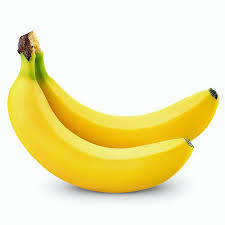

Tentangbuah.com
Pisang

Pisang adalah nama umum yang diberikan pada
tumbuhan terna raksasa berdaun besar memanjang dari suku Musaceae.
Beberapa jenisnya ( Musa acuminata, M. balbisiana,
dan M. ×paradisiaca ) menghasilkan buah konsumsi yang
dinamakan sama. Buah ini tersusun dalam tandan dengan
kelompok-kelompok tersusun menjari yang disebut sisir.
Hampir semua buah pisang memiliki kulit berwarna kuning ketika
matang, meskipun ada beberapa yang berwarna jingga, merah, hijau,
ungu, atau bahkan hampir hitam. Buah pisang sebagai bahan pangan
merupakan sumber energi (karbohidrat) dan mineral, terutama kalium.
Perlu disadari, istilah "pisang" juga dipakai untuk sejumlah jenis
yang tidak menghasilkan buah konsumsi, seperti pisang abaka, pisang
hias, dan pisang kipas. Artikel ini hanya membahas pisang penghasil
buah konsumsi serta kerabatnya yang berkaitan.
Khasiat Pisang
- Sumber energi
- Memperlancar sistem pencernaan
- Meningkatkan mood
- Melancarkan peredaran darah
- Meningkatkan konsentrasi otak
- Sumber antioksidan
Daftar Harga
| Jenis Pisang | Harga | |
|---|---|---|
| Per Kilo | Per Biji | |
| Pisang Ambon | 21.000 | 3.000 |
| Pisang Kepok | 50.000 | 5.000 |
| Pisang Cavendish | 45.000 | 9.000 |
| Pisang Susu | 15.000 | 1.000 |